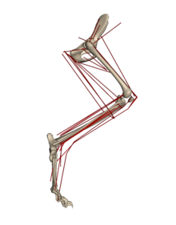
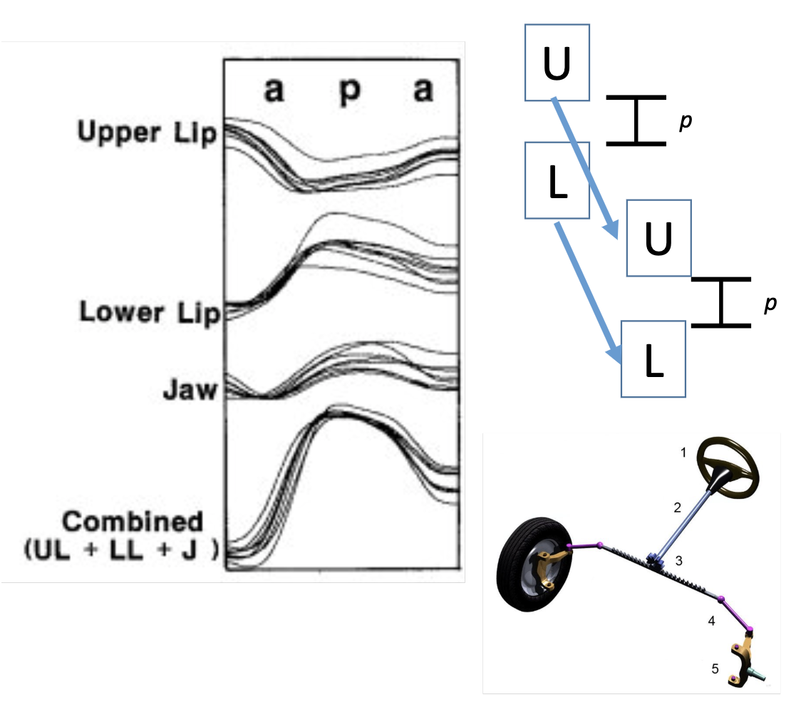

Current Issues in Human Motor Control
California State University, Northridge
2025-02-02


Efficiency :
\[\varepsilon = \frac{W_{TOT}}{E}\]
![]()